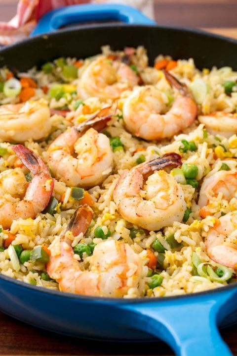

Fried Rice with shrimp
Fried Rice with Shrimp
Pasta pesto
Ceasar salade

Ingrediënten
- 1 krop romaine sla (of 2/3 kropjes baby romaine sla)
- 1 mini ciabatta brood (of evt. oud brood dat je over hebt)
- 50 gr geraspte Parmezaanse kaas
- 1 teen knoflook
- 2 verse eieren
- 1 eetlepel olijfolie
Instructies
Kook de eieren 8 minuten.
Maak ondertussen de dressing: doe alles, behalve de olijfolie en de crème fraîche,
in de keukenmachine of blender en mix door elkaar. Schenk druppelsgewijs de olijfolie erbij,
blijf ondertussen rustig mixen, tot de gewenste dikte. Roer als laatste de crème fraîche er doorheen.
Snijd het brood in grove stukjes en meng in een kom met een 1 eetlepel olijfolie en 1 teen knoflook uitgeperst.
Rooster de croutons in een droge koekenpan of in de Airfryer 3 minuten tot ze knapperig zijn.
Snijd de sla grof en verdeel over borden. Verdeel hier de croutons en flink wat Parmezaanse kaas over.
Snijd de eieren in partjes en leg op de salade. Besprenkel de caesar salade met flink wat van de romige dressing.
Tip: Verdeel eventueel wat ansjovis over de salade. Probeer ook eens deze caesar salade met kip of caesar salade met garnalen.
Tip: Parmezaanse kaas bevat dierlijk stremsel waardoor dit recept niet 100% vegetarisch is. Vervang de kaas voor een oude of gerijpte kaas met vegetarisch stremsel of probeer eens een veganistische kaas.